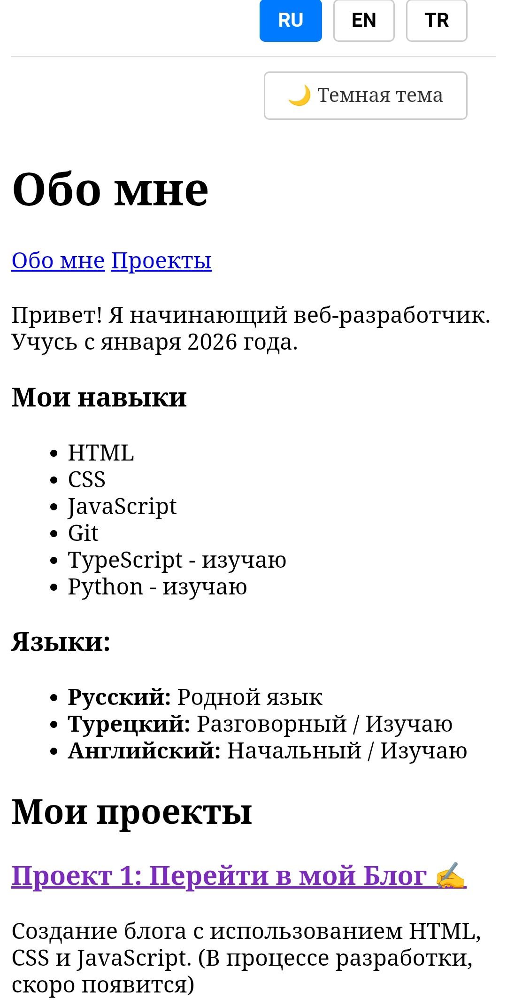

Кейс 3: Страница "Обо мне. Проекты"
1. Задача
Создала личную страницу "Обо мне. Проекты" для демонстрации текущих навыков веб-разработки, изучаемых языков программирования и навигации по созданным проектам. Также добавила переключатель языков интерфейса и темную тему.
2. Моя роль
Я полностью разработала структуру и логику страницы: сверстала кнопки переключения языков (RU, EN, TR) и темной темы, оформила списки навыков и языков, а также подготовила секцию "Мои проекты" со ссылкой на готовые блоги.
3. Решения
Использовала семантические теги <ul> и <li> для аккуратного структурирования списков. Настроила текстовые ссылки для переходов между разделами страницы. Оставила заготовки для JavaScript, чтобы в будущем оживить кнопки смены темы и переключения языков.
Иллюстрация проекта:

4. Результат
Страница четко структурирует информацию обо мне как о начинающем разработчике и связывает мои текущие проекты в одном месте.